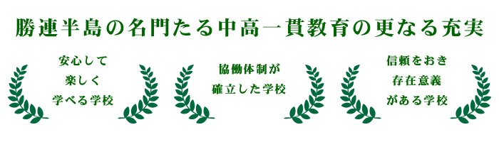

教育理念

グラデュエーション・ポリシー
＊自ら目標を持ち主体的に学習できる生徒を育成する
＊思いやりのある豊かな心を持つ生徒を育成する
＊心身ともにたくましく根気強い生徒を育成する
＊学校生活のルールやマナーを尊重する規範意識を育成する
＊「確かな学力」を向上させ、個々の希望進路を実現する
＊勤労を重んじる態度や協調の精神を培い、健康で心豊かな人間性を育成する
＊創造性に富み情報化・国際化、グローバル化へ対応できる生徒を育成する
＊長所・短所を含めた自己理解・自己受容に努め、失敗を恐れず果敢に挑戦を続け達 成感を積み重ねて自分自身を肯定できる生徒を育成する